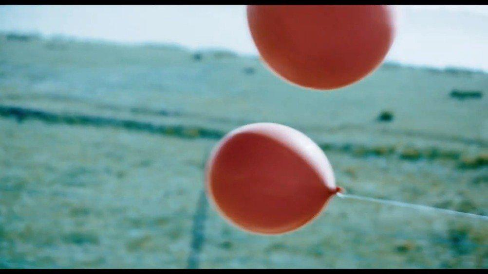

破裂与腾飞
红色的气球，在冷色调的镜头中尤为显眼，藏区朴素的颜色，一望无际的牧场，带刺铁栅栏上飘扬的塑料纸片，羊群与摩托车，青海或者西藏。
惨淡而凋敝的背景里面，一个家庭里的人各怀心事，妹妹做了尼姑，到头来却看不到那本试图讲明她的过去的「气球」，姐姐的安全套被孩童当作气球偷去，自己陷入了生育的道德陷阱里。藏地的信仰与女性权利的冲突重重，她们是男人发泄的对象，是灵魂转世投胎的母体，是计划生育的作用人群。父亲在县城说着蹩脚汉语给孩子们买了两只气球，最后一只破裂，另一只飞走了，红色的精子在天空中无拘无束的翻腾，吸引了所有人的注目，我想那应该就是人们囿于传统礼教之下内心深处的向往吧。
